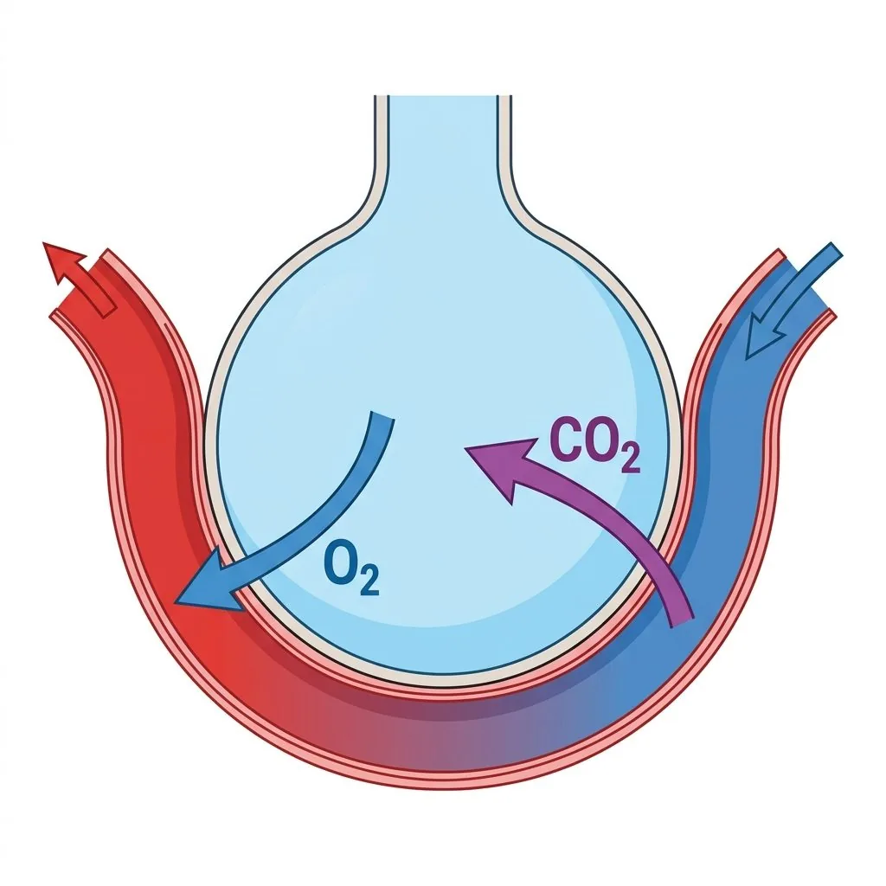

a. Relie chaque organe respiratoire à son rôle anatomique précis :
b. Complète le paragraphe sur le trajet de l'air avec les mots de la banque :
a. Coche la case correspondant à chaque action mécanique :
| Action mécanique lors du souffle | Inspiration | Expiration |
|---|---|---|
| Le diaphragme se contracte et s'abaisse (s'aplatit). | ||
| La cage thoracique se resserre et s'abaisse vers l'intérieur. | ||
| Le volume des poumons augmente, ce qui aspire l'air. | ||
| L'air riche en dioxyde de carbone est rejeté vers l'extérieur. |

a. Observe le schéma de l'alvéole. Explique comment change la couleur du sang lorsqu'il circule autour de l'alvéole, et quel gaz il a récupéré :
Coche la bonne proposition pour chaque question :
Question 1 : Comment appelle-t-on la réaction chimique microscopique qui produit de l'énergie dans nos cellules à partir du sucre et de l'oxygène ?
Question 2 : Quelle est l'équation chimique complète de cette réaction ?
Question 3 : Dans une classe fermée, quel gaz s'accumule à cause de la respiration et provoque de la fatigue ?
Écris V (Vrai) ou F (Faux) dans la case correspondante pour chaque affirmation :
a. Relie chaque chiffre incroyable du système respiratoire à sa signification :
b. Quelle réaction réflexe involontaire se produit pour nettoyer immédiatement ton nez lorsqu'une poussière l'irrite ?